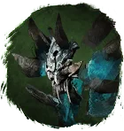
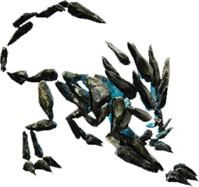
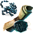

Открыть в интерактивной вики →

| Уровень | 65 |
|---|---|
| Прокачка | есть |
| Ранг в стае | 5 |
| Здоровье | 2000 |
| Мана | 1100 |
| Выносливость | 1300 |
| Статистика | Уровень: 65, ранг: 5, здоровье: 2000, мана: 1100, выносливость: 1300 |
Цена
500  Платина или
Платина или
Платина или 
Рецепт ЭрыВыкуп


Где взять
Покупается у Азарии  Азария
Азария
АзарияДоп. бонус
Повышенный шанс на критические удары.
Навыки


Скины
Доп. информация
Требуемый уровень: 65
Призыв: Требуется Рецепт Эры
Цена выкупа: 3 × Средняя Фляга Здоровья, 3 × Средняя Фляга Выносливости, 3 × Средняя Фляга Маны у Азарии в Деревне друидов.
Может получать опыт — ДА
Описание
 | Созданная из воды, она всей мощью этой стихии сокрушит всё на своём пути. Оглушит и прикончит, верно помогая хозяину в бою. Элементаль, который высасывает жизнь и чаще наносит критические удары. Атакует физически, издалека, ментально Использует: Фронт-кик, Хадукен, Критический удар, Оглушение, Пробивающий удар, Самопожертвование, Мощный удар, Рёв, Транс, Обычная атака. | |